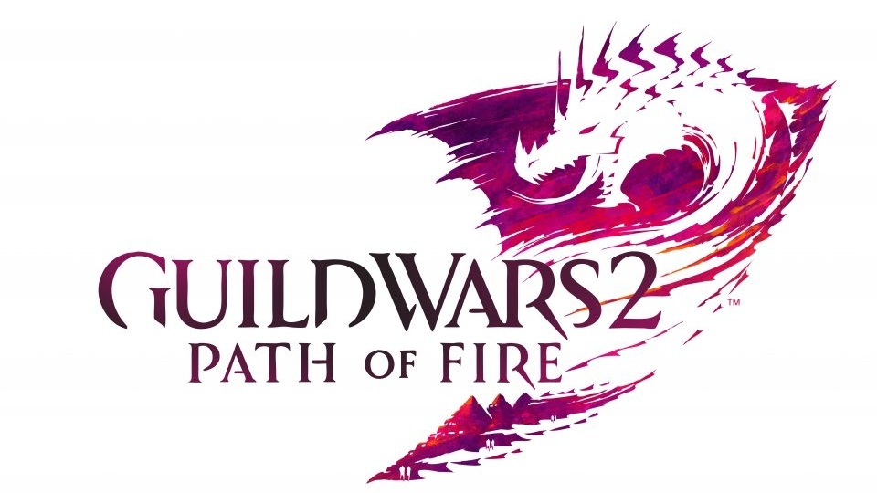

Newsy | Living Story Season 4 Episode 3
Long Live the Lich – Podsumowanie AMA z Deweloperami
Ogólnie
- Deweloperzy zamierzają dodać więcej informacji związanych z historią poszczególnych legendarnych broni drugiej generacji, jeśli ich pomysły spotkają się z zainteresowaniem ze strony graczy to legendarne bronie, które już znajdują się w grze zostaną o ten element uzupełnione.
- AN zastanawia się co powinna zrobić żeby stworzyć solidne samouczki (np. dla mechaniki defiance bar'a). Ale nie mamy co liczyć, że pojawią się one w najbliższej przyszłości, ponieważ wciąż są w fazie projektowania i będą wymagały wiele pracy oraz testów by mieć pewność, że będą spełniały swoją rolę.
- Jeśli chodzi o Peteya twórcy gry zapewniają, że nie zostanie zapomniany i powinniśmy się spodziewać rozwinięcia tego elementu gry w dalszej części sezonu.
- Mają być dodane wyścigi rollerbeetle w podstawowej części gry. Niestety po drodze zawsze pojawiają się jakieś katastrofy, które powstrzymują plany AN ale jest to istotny plan ich przyszłych działań. Bardzo pobadają im się stworzone przez graczy kursy wyścigowe.
- Jednym z wymogów projektowych dla beetla było to, że nie zastąpi on innych mountów w codziennych podróżach na krótkie odległości.
- AN po zebraniu feedbacku od graczy będzie starała się wyeliminować wszystkie niedogodności związane z używaniem beetla, przy jednoczesnym zachowaniu cech innych mountów.
- Niektórzy gracze pytali czy zostaną zaktualizowane skiny, takie jak np. „Branded Mounts Pack” czy ostatnio wydany „Awakened Mounts Pack” o dodanie do nich beetla. Odpowiedź AN jest taka, że nie będą tego robić ale mogą nas zapewnić, że w przyszłości pojawią się w gem store skiny dedykowane dla beetla.
Crashe Gry
Opóźnienie nowego LS wynikała z licznych problemów ze stabilnością gry. Po czasie kiedy stwierdzili, że nowe LS jest gotowe i dali działowi marketingu znak aby wypuścili trailer. W dniu premiery zaczęły się pojawiać błędy, których wcześniej nie udało się wygenerować na ich środowiskach testowych. Kiedy jedna mapa się zawieszała - zawieszały się również pozostałe mapy znajdujące się na danym serwerze. Aby zabezpieczyć resztę gry, odizolowali wszystkie nowe instancje z "Long Live the Lich" na określonych serwerach, które w momencie awarii blokowały dostęp do nowej mapy. Przez resztę dnia badali raporty o awariach. Okazało się, że AN źle oszacowała wymagania nowych instancji względem przeznaczonych dla nich zasobów serwerowych. Jednym z działań naprawczymi było dołożenie nowych serwerów aby umożliwić graczom przejść przez story i na nową mapę.
Meta-Event Gandara
- Wprowadzono już kilka zmian do mety, aby lepiej wynagradzać graczy za ich wysiłki i AN nadal analizuje różne nowe opcje ale niestety nie mają nic konkretnego, co mogliby ogłosić w tym momencie.
- Jednym z powodów, dla których nie można zwiedzić całego miasta, był czas niezbędny do jego opracowania. Kiedy gracze dowiedzą się, jak dostać się do tej części mapy, zorientują się, że znajduje się tam wiele rekwizytów ale nie na tyle szczegółowych, aby można je było wykorzystać.
Dopracowanie Gry
Lore i mechanika gry jest skomplikowana a wiele zespołów pracuje równocześnie nad różnymi częściami gry i zdarza się, że czasami coś zostaje pominięte i zespoły muszą wtedy naprawiać to dość późno. Ten etap LS został poważnie opóźniony ze względu na tego rodzaju poprawki.
Kolekcje i System Garderoby
Ze względu na sposób działania garderoby jest bardzo mało prawdopodobne, że akcesoria zostaną do niej dodane. W dłuższej perspektywie czasu planowane są nowe rozwiązania dla legendarnych akcesoriów takie jak skiny efektów i sposobów na ich zdobycie. Jest duża szansa, że pojawią się w przyszłości kolekcje dla podstawowych map Tyri ale nie jako nowych część LS.
Essence of Luck
W najbliższej przyszłości nie ma co liczyć na rozwój tego elementu gry ponieważ bardzo wielu graczy nie osiągnęło maksymalnego "magic find" ale deweloperzy zgadzają się, że ta mechanika potrzebuje rozwinięcia.
Field Tech Turret
Zostały zaprojektowane wyłącznie jako część tej mapy. Na początku miały trochę więcej wspólnego z historią, ale AN z tego zrezygnowała. Zaczęto omawiać pomysł wprowadzenia ich na innych mapach ale w momencie, w którym doszło do dyskusji, było już za późno, aby to zrobić i przetestować. W przyszłości być może wrócą do tego pomysłu.
Wyzwania Związane z Instancjami Fabularnymi
AN chce stworzyć ich więcej w przyszłości dla graczy, którzy lubią dodatkowe wyzwania. Ale na chwilę obecną tworzą wiele specyficznych dla instancji rozwiązań, którymi chcieliby bardziej zainteresować graczy.
Raid/Fractale
- Następny rajd jest zasadniczo wykonany i czeka tylko na dodatkowe elementy jak na przykład lektora.
- AN nadal uważa, że dopieszczanie fraktaki jest konieczne. Drobne poprawki są wykonywane gdy tylko jest okazja. Większe poprawki wymagają więcej czasu i wysiłku, aby odpowiednio je zaprojektować, przetestować a następnie wdrożyć. AN obecnie pracuje nad przeprojektowaniem kilku fraktali, które muszą zostać dostosowane do aktualnych standardów.
- Prace nad nowymi fraktalami są ważniejsze niż przeróbki już istniejących.
- AN zobowiązała się do produkcji jednego fraktala co dwa odcinki i są już na ukończeniu kolejnego.
- "Challenge mode" nie jest przeznaczone dla każdego fraktala i pojawia się tylko wtedy, gdy AN ma coś naprawdę fajnego do pokazania.
- Nowy fraktal "Deepstone" ma być jednym z łatwiejszych fraktali. Podobnie jak w przypadku wszystkich fraktali również i tu będą pojawiały się poprawki, ale AN nie zwiększy jego poziomu trudności.
- Nie ma planów dotyczących obecnego systemu poziomów na fraktalach.
- Rajdy i fraktale opracowuje ten sam zespół (są tak połączone od ok. roku) i jego praca jest obecnie połączona z wydawaniem epizodów living story. Kolejnego skrzydła rajdu powinniśmy się spodziewać przed wypuszczeniem nowego fraktala.
- Na razie AN nie może podać żadnych dat, ale kolejne skrzydło rajdowe jest już we wczesnej fazie produkcji.
- W pewnym momencie AN pracowała nad zupełnie nowym systemem fraktali, ale zrezygnowała z niego ponieważ pochłaniał zbyt wiele zasobów potrzebnych do rozwoju fraktali jako takich.
- Przebudowa lochów wymagała by zbyt dużego nakładu pracy. Lepiej poświęcić czas na zrobienie czegoś nowego.
- Trzymajcie swoje "golden fractal relic'ki". AN planuje coś zrobić w tym temacie.
PvP
- Deweloperzy mają kilka pomysłów na zmiany w Strongholdzie ale nie jest to priorytet.
- AN pracuje nad kilkoma nowymi mapami. Jedna z nich o tematyce pustynnej dla "conquest", dwie dodatkowe małe mapy aren i jedna dużą dla "custom".
- Brak planów związanych z turniejami.